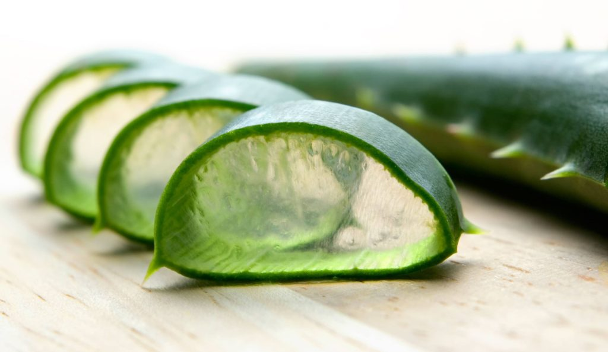

All About Life
kumpulan artikel-artikel kehidupan sehari-hari
Manfaat Lidah Buaya
Jika membahas manfaat lidah buaya, rasanya tidak akan ada habisnya. Lidah buaya sudah sejak lama digunakan untuk mengatasi berbagai macam penyakit atau sekedar untuk menjaga kesehatan tubuh. Selain itu lidah buaya juga biasa dimanfaatkan untuk merawat kecantikan, bisa digunakan untuk melembabkan kulit sampai memanjangkan rambut.
Manfaat utama aloe vera atau lidah buaya ini bisa kita dapatkan melalui daging daunnya yang berbentuk gel berwarna bening. Tidak hanya mengandung banyak air, gel lidah buaya itu juga mengandung beragam zat biologis aktif. Seperti anthraquinone yang memiliki efek laksatif (merangsang kerja usus) polysaccharide atau yang dikenal dengan acetylated mannose atau acemann (merupakan golongan karbohidrat yang berkhasiat untuk imunitas, penyembuhan luka dan antiviral dan kanker pada hewan)
Terdapat pula zat prostaglandin yang bertindak dalam penyembuhan luka. Lidah buaya juga mengandung senyawa anti-inflamasi seprti salisilat dan glikoprotein, serta senyawa yang merangsang pertumbuhan kulit dan jaringan konektif. Senyawa lainnya seperti asam lemak (kolesterol, trigliserida, steroid, lignin, asam urik dan asam salisilat), asam amino, enzim-enzim, vitamin (B1, B2, B6, C dan E), mineral (sodium, kalsium, magnesium, mangan, seng kromium dan tembaga).
Anda bisa memanfaatkan lidah buaya sebagai media penyembuhan luka berkat beragam kandungan vitamin serta mineral seperti vitamin C, E dan zinc. Zat-zat ini memiliki efek antibakterial dan antifungal yang dapat mencegah terjadinya infeksi pada luka.
Hanya perlu mengoleskan gel lidah buaya untuk membantu mempercepat penyembuhan luka superfisial dan luka bakar seperti radang dingin, luka akibat radiasi, terbakar sinar matahari dan beberapa jenis dermatitis (radang kulit), luka teriris, psoriasis, alergi tumbuhan, gigitan serangga, lecet, bisul, dan masalah dermatologis lainnya. Tetapi sebaiknya jangan menggunakan gel lidah buaya untuk luka dalam atau luka operasi.
Apabila dioleskan pada luka bakar, gel lidah buaya akan menggantikan cairang yang hilang tanpa menghentikan proses oksigenasi, meminimalkan bekas luka dan mempercepat penyembuhannya.
Karena banyak sekali kandungan vitamin serta mineralnya, aloe vera seringkali dimanfaatkan sebagai bahan baku pembuatan kosmetik, terutama sebagai penyegar, emolien dan pelembab kulit. Cobalah untuk menggunakan gel lidah buaya secara teratur, untuk mempercepat pengelupasan sel-sel kulit mati agar sel-sel kulit baru dapat tumbuh. Tidak hanya itu, ia juga efektif untuk menyembuhkan kulit berjerawat serta meregenerasi kulit. Aloe vera memiliki kemampuan untuk memperbaiki jaringan kulit dari luar dan dalam berkat kemampuan penetrasinya.
Tugas Praktikum Desain Web
Di kerjakan mulai: 12 Desember 2018
Whatsapp :082246399081
Website text and design is copyright.